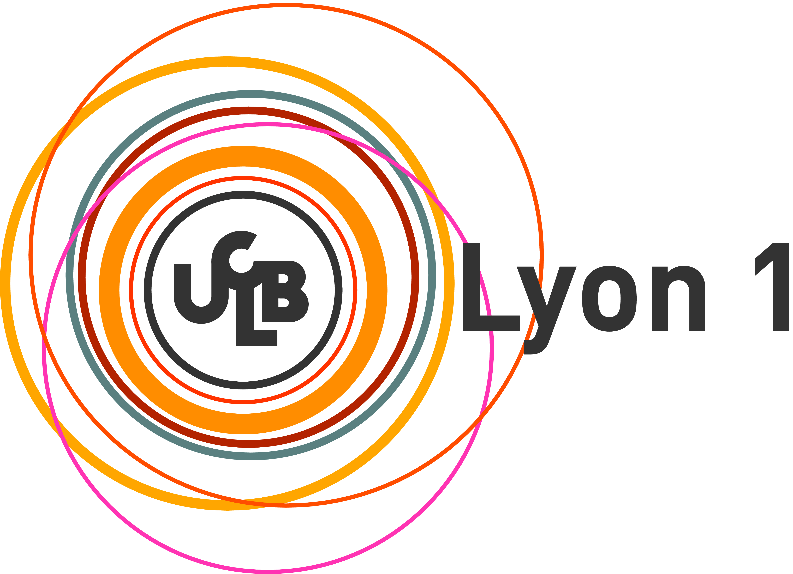
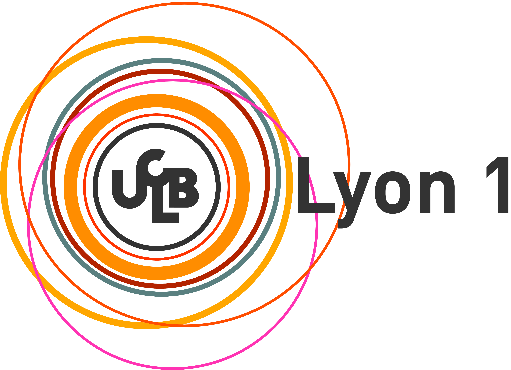

Education
2008 - 2011: Ph.D. in Computer Science, Lille University of Sciences and Technologies.
- Research Areas: Database, Semantic Web.
- Thesis Title: Semi-Automatic Multimedia Metadata Integration.
2005 - 2006: M.S.E in Computer Science, University of Rennes 1.
- Research Areas: Data Compression.
- Thesis Title: Lossless Video Coding With Semantic Scalability.
2001 - 2005: Engineer Degree, University of Blida.
- Research Areas: Image Processing.
- Thesis Title: Evaluation of Image Segmentation.
Experience
Since december 2015: Research Team Manager.
- Machine Learning for Big Data.
- Statistical Analysis.
- Recommendation Systems.
2015 (4-10): Data scientist, Human Sciences Institute.
- Text mining and matching.
- Automatic text decomposition and structuring.
- Development of intelligent search engine.
 2013 - 2015: Post-doctoral researcher, University of Lyon 1.
- Language track manager of the research project CEDAR
- Large-scale reasoning (Big-Data) using Order-Sorted Featured formalism.
- Query rewriting and optimization using reasoning.
- Implementation of the CEDAR Semantic Web reasoner.

2011 - 2012: Research and teaching assistant, Lille University of Sciences and Technologies.
- Multimedia content adaptation.
- Development of data mediation architecture.
2008 - 2011: Research engineer, CNRS (French National Research Center).
- Data-modeling, specification and integration a part of CAM4Home project.
- Development of an automatic data integration algorithm.
- Ontology matching and query rewriting.
2013 - 2015: Post-doctoral researcher, University of Lyon 1.
- Language track manager of the research project CEDAR
- Large-scale reasoning (Big-Data) using Order-Sorted Featured formalism.
- Query rewriting and optimization using reasoning.
- Implementation of the CEDAR Semantic Web reasoner.

2011 - 2012: Research and teaching assistant, Lille University of Sciences and Technologies.
- Multimedia content adaptation.
- Development of data mediation architecture.
2008 - 2011: Research engineer, CNRS (French National Research Center).
- Data-modeling, specification and integration a part of CAM4Home project.
- Development of an automatic data integration algorithm.
- Ontology matching and query rewriting.
 2007 - 2008: Research engineer, Thomson Corporate Research.
- Color conversion method for multi-primary display.
- Optimizing spectral color reproduction.
2007 - 2008: Research engineer, Thomson Corporate Research.
- Color conversion method for multi-primary display.
- Optimizing spectral color reproduction.
Program Committee Member
- IEEE International Smart Cities Conference (2017).
- Big-Data Forum 2014, Lyon.
- International Symposium on Computing in Science & Engineering (2011 & 2013).
- Colloque sur l'Optimisation et les systèmes d'Information (2013 & 2014).
- Canadian Semantic Web Symposium (CSWS 2013).
- Reviewer for the International Journal of Web Engineering and Technology (IJWET).
- Reviewer for the International Journal of Computer and Information Technology (IJCIT).
- Reviewer for the International Journal of Metadata, Semantics and Ontologies.
Skills
Platforms: Linux, Mac OS,Windows.
Programming: Java/J2EE, Python, SPARQL, SQL,.....
IDEs: Eclipse, NetBeans, Grails, MS Visual Studio, .....
Addendum
Language: Arabic (native speaker), French (Fluent), English (Fluent).